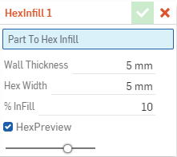
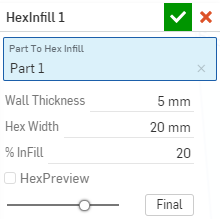
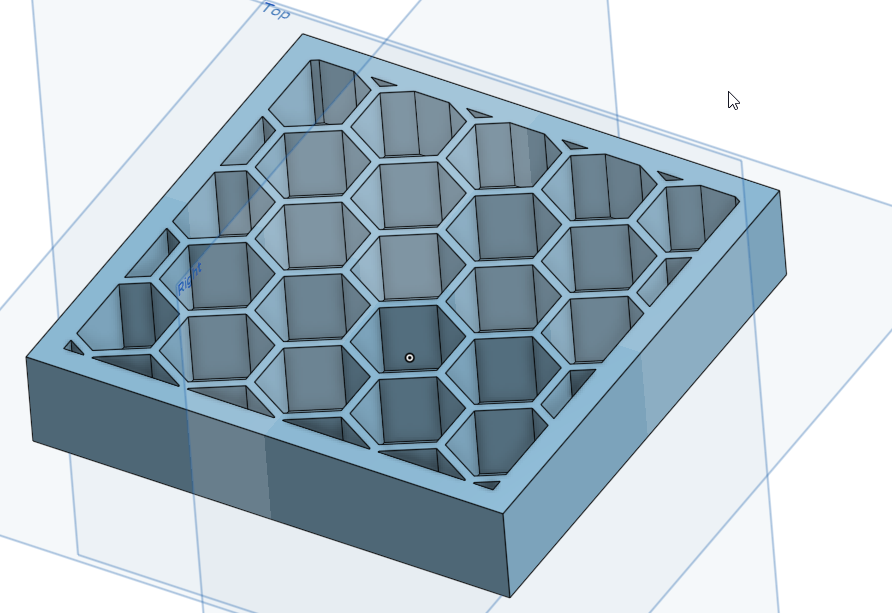

藉由給定參數(如下圖)製作出蜂巢狀填充，
以達到節省列印時間與材料，
且強度足夠之內部結構。
因為目前提供參數為外殼厚度、六角內接圓直徑、填充面積，
如果要解決強度的問題就需要修改為受力大小、材料強度、安全係數、外殼厚度。

實際例子


以下程式為Onshape提供的Hex InFill FeatureScript原始碼經過中問註解，協助了解程式架構以便更改程式。
FeatureScript 336;
import(path : "onshape/std/geometry.fs", version : "336.0");
// 設定填充百分比範圍為1~100，預設10
export const INFILL_BOUNDS = ///設定值域
{
"min" : 1,
"max" : 100,
(unitless) : [1, 10, 100]
} as IntegerBoundSpec; //限定整數
// parameter values (real numbers) in various document unit systems with defaults
export const HEX_BOUNDS =
{
"min" : 1 * millimeter,
"max" : 100 * millimeter,
(meter) : [0.0, 0.025, 500],
(centimeter) : 0.5,
(millimeter) : [1, 5, 100],
(inch) : .25,
(foot) : 0.015,
(yard) : 0.005
} as LengthBoundSpec; //限定整數
//-----------------
annotation { "Feature Type Name" : "HexInfill" }
export const HexInfill = defineFeature(function(context is Context, id is Id, definition is map)
precondition
{
annotation { "Name" : "Part To Hex Infill", "Filter" : EntityType.BODY, "MaxNumberOfPicks" : 1 } //表單名稱:Part To Hex Infill,可選項目:實體,最大選擇數:1
definition.PartToInfill is Query; //把所選項目定義為PartToInfill之後要用到只要輸入definition.PartToInfill就代表所選的實體
annotation { "Name" : "Wall Thickness" } //表單名稱:Wall Thickness
isLength(definition.WallThickness, HEX_BOUNDS); //輸入長度且基礎設定由HEX_BOUNDS輸入
annotation { "Name" : "Hex Width" } //表單名稱:Hex Width
isLength(definition.HexWidth, HEX_BOUNDS);
annotation { "Name" : "% InFill" } //表單名稱:% InFill
isInteger(definition.InFill, INFILL_BOUNDS);
annotation { "Name" : "HexPreview", "Default" : true }//表單名稱:HexPreview 預設:是
definition.HexPreview is boolean; //設定輸出為布林值(輸出1或0判斷是或否)
}
//-----------------
{
// get the limits of the bounding box
var boundingBox is Box3d = evBox3d(context, { "topology" : definition.PartToInfill }); //運用所選實體找出邊界框
var bbx1 = boundingBox.minCorner[0]; //定義所選實體中最小x座標為bbx1
var bby1 = boundingBox.minCorner[1]; //定義所選實體中最小y座標為bby1
var bbz1 = boundingBox.minCorner[2]; //定義所選實體中最小z座標為bbz1
var bbx2 = boundingBox.maxCorner[0]; //定義所選實體中最大x座標為bbx2
var bby2 = boundingBox.maxCorner[1]; //定義所選實體中最大y座標為bby2
// from the hex width, define some other variables
var FullWidthDimless = (definition.HexWidth) / meter; //六角形內接圓直徑
var HalfWidthDimless = (definition.HexWidth / 2) / meter;//六角形內接圓半徑
var LongArm = HalfWidthDimless / cos(30 * degree); //六角形外接圓半徑
var Flat = (HalfWidthDimless * tan(30 * degree)) * 2; //六角形邊長
var Yincrement = LongArm + (Flat / 2); //兩六角形連心線至上方六角型垂直距離
var TotalXcells = ceil((bbx2 - bbx1) / definition.HexWidth) + 1; //定義x方向六邊形總數 (ceil 大於某數的最大整數)
var TotalYcells = ceil((bby2 - bby1) / (Yincrement * meter)) + 1; //定義y方向六邊形總數
var AreaOfHex = (6 * (HalfWidthDimless * HalfWidthDimless)) / (sqrt(3)); //六邊形面積 (6*三角形面積)
var ReducedArea = AreaOfHex * ((100 - definition.InFill) / 100); //六邊形縮小後面積 (由表單瑱入% InFill之值決定縮小多少)
var ReducedHalfWidth = sqrt((sqrt(3) * ReducedArea) / 6); //反推縮小面積後的外接圓半徑
var ThickenAmount = (FullWidthDimless - (ReducedHalfWidth * 2)) / 2; //邊長縮小長度
LongArm -= ThickenAmount; // this is the 'radius' of the reduced (infilled) hex 把縮小長度轉為負數
// define some variables that we will use to create the hex sketch 定義製作六邊形草圖的數值
var Origin = vector([0, 0, bbz1]) * meter; // origin (lower z bounding box) 原點位置
var Normal = vector([0, 0, 1]); // sketch normal (z+) 草圖法線方向
var Xdir = vector([1, 0, 0]); // define x direction in the new sketch 新草圖中的x方向
// create the plane on which to generate the sketch 創建用來生成草圖的平面
var HexPlane is Plane = plane(Origin, Normal, Xdir);
// create sketch 創建草圖
var HexSketch = newSketchOnPlane(context, id + "HexSketch", {
"sketchPlane" : HexPlane //草圖平面為HexPlane
});
// all the hexes are the same size so we only have to calculate the 6 node locations (relative to the hex center) one time
var x1 = makeArray(6); //定義數列 x1 (6個值)
var y1 = makeArray(6); //定義數列 y1 (6個值)
var x2 = makeArray(6); //定義數列 x2 (6個值)
var y2 = makeArray(6); //定義數列 y2 (6個值)
for (var i = 0; i < 6; i += 1) //for迴圈
{
var ang = i * 60; //定義ang 第1次計算為60 第2次計算為120 ....
x1[i] = LongArm * cos((ang - 30) * degree); //直線繪製六邊形起始點x座標
y1[i] = LongArm * sin((ang - 30) * degree); //直線繪製六邊形起始點y座標
x2[i] = LongArm * cos((ang + 30) * degree); //直線繪製六邊形結束點x座標
y2[i] = LongArm * sin((ang + 30) * degree); //直線繪製六邊形結束點y座標
}
// Begin loop to draw hex line entities 開始繪製六邊形
for ( var y = 0; y < TotalYcells; y += 1) //重複執行(Y軸六邊形總數)次
{
var Xcenter = (bbx1 - definition.HexWidth) / meter; //最小x座標-內接圓直徑
var Ycenter = (bby1 + (y * (Yincrement * meter))) / meter;//最小y座標+(兩六角形連心線至上方六角型垂直距離)
if (y % 2 != 0) // odd row y/2餘數不為0時
Xcenter += (FullWidthDimless / 2); //Xcenter的值 增加六角形內接圓半徑
for (var x = 0; x < TotalXcells; x += 1) //重複執行(X軸六邊形總數)次
{
Xcenter += FullWidthDimless; //Xcenter的值 增加六角形內接圓直徑
for (var i = 0; i < 6; i += 1)
{
var LineStart = vector([Xcenter + x1[i], Ycenter + y1[i]]) * meter; //各線段起點座標
var LineEnd = vector([Xcenter + x2[i], Ycenter + y2[i]]) * meter; //各線段終點座標
// generate a unique id for every line entity in the sketch
var LineID = "line"~"-"~x~"-"~y~"-"~i;
// draw a line
skLineSegment(HexSketch, LineID, {
"start" : LineStart,
"end" : LineEnd
});
}
}
}
// End line drawing loop 草圖繪畫結束
skSolve(HexSketch); // solve the sketch. Must solve the sketch before you can do anything else. 結束草圖
// do this only if the 'preview' option is un-checked 只在取消預覽時執行以下
if (!definition.HexPreview)
{
// make a copy of the original part 複製所選實體
transform(context, id + "CopyOfOriginal", {
"entities" : definition.PartToInfill,
"transformType" : TransformType.COPY,
"makeCopy" : true });
// cut extrude the entire sketch through the copy of the original part 切除擠出部分
extrude(context, id + "HexCuts", {
"entities" : qSketchRegion(id + "HexSketch"),
"endBound" : BoundingType.THROUGH_ALL,
"operationType" : NewBodyOperationType.REMOVE,
"defaultScope" : false,
"booleanScope" : qCreatedBy(id + "CopyOfOriginal", EntityType.BODY)
});
// this debug statement shows a graphical preview of the result of the hex-removed-copy
debug(context, qCreatedBy(id + "CopyOfOriginal", EntityType.BODY));
// shell (hollow) the original part - if this is not possible (fails) then show error message and exit 如果無法執行則跳出錯誤訊息並結束
try
{
shell(context, id + "shell", {
"parts" : definition.PartToInfill,
"thickness" : definition.WallThickness,
"isHollow" : true
});
}
catch
{
throw regenError("Unable to shell this part with the current wall thickness");
}
// querry that returns the hex-removed-copy and the shelled (hollow) original part
// note: it is the first item in the querry that retains its identity (name, color etc)
var PartAndHex = qUnion([definition.PartToInfill, qCreatedBy(id + "CopyOfOriginal", EntityType.BODY)]);
//boolean union of shelled (hollow) part and hex-removed-copy
opBoolean(context, id + "BooleanUnion", {
"tools" : PartAndHex,
"operationType" : BooleanOperationType.UNION
});
//querry that returns all the entities in the hex sketch
var StuffInSketch = qCreatedBy(id + "HexSketch", EntityType.BODY);
// delete all the sketch entities
opDeleteBodies(context, id + "DeleteSketchContents", { "entities" : StuffInSketch });
}
// endif HexPreview
});
//-----------------
1